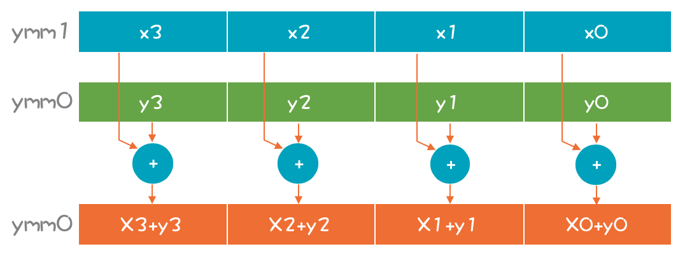
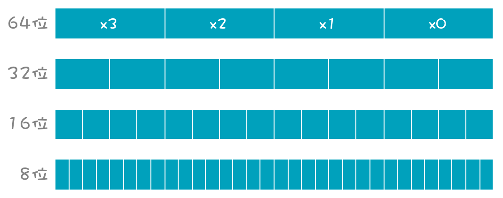
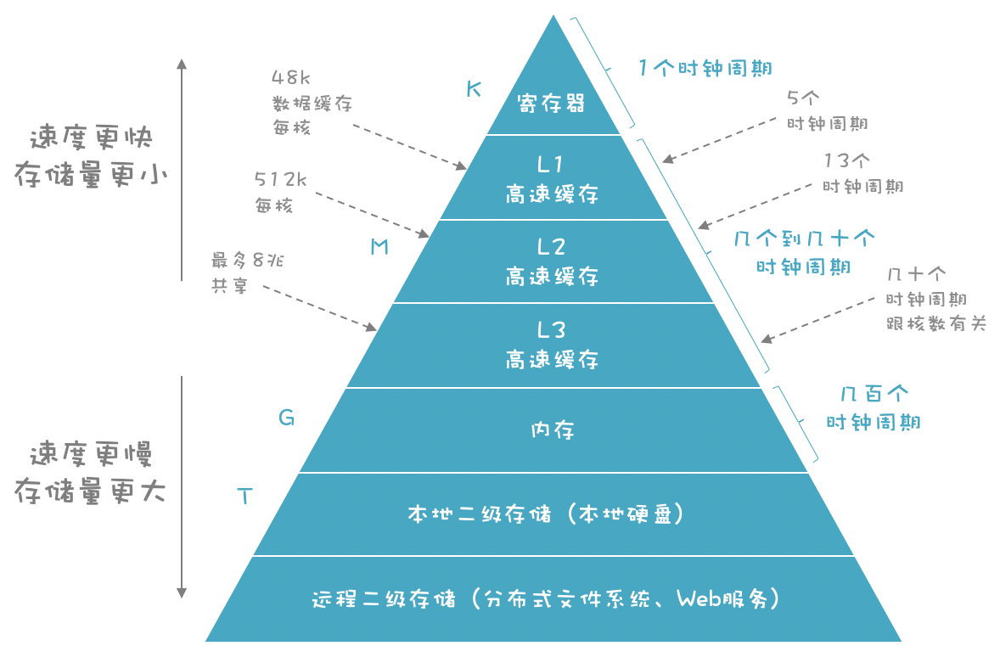

- 00 开篇词 为什么你要学习编译原理？.md.html
- 01 理解代码：编译器的前端技术.md.html
- 02 正则文法和有限自动机：纯手工打造词法分析器.md.html
- 03 语法分析（一）：纯手工打造公式计算器.md.html
- 04 语法分析（二）：解决二元表达式中的难点.md.html
- 05 语法分析（三）：实现一门简单的脚本语言.md.html
- 06 编译器前端工具（一）：用Antlr生成词法、语法分析器.md.html
- 07 编译器前端工具（二）：用Antlr重构脚本语言.md.html
- 08 作用域和生存期：实现块作用域和函数.md.html
- 09 面向对象：实现数据和方法的封装.md.html
- 10 闭包： 理解了原理，它就不反直觉了.md.html
- 11 语义分析（上）：如何建立一个完善的类型系统？.md.html
- 12 语义分析（下）：如何做上下文相关情况的处理？.md.html
- 13 继承和多态：面向对象运行期的动态特性.md.html
- 14 前端技术应用（一）：如何透明地支持数据库分库分表？.md.html
- 15 前端技术应用（二）：如何设计一个报表工具？.md.html
- 16 NFA和DFA：如何自己实现一个正则表达式工具？.md.html
- 17 First和Follow集合：用LL算法推演一个实例.md.html
- 18 移进和规约：用LR算法推演一个实例.md.html
- 19 案例总结与热点问题答疑：对于左递归的语法，为什么我的推导不是左递归的？.md.html
- 20 高效运行：编译器的后端技术.md.html
- 21 运行时机制：突破现象看本质，透过语法看运行时.md.html
- 22 生成汇编代码（一）：汇编语言其实不难学.md.html
- 23 生成汇编代码（二）：把脚本编译成可执行文件.md.html
- 24 中间代码：兼容不同的语言和硬件.md.html
- 25 后端技术的重用：LLVM不仅仅让你高效.md.html
- 26 生成IR：实现静态编译的语言.md.html
- 27 代码优化：为什么你的代码比他的更高效？.md.html
- 28 数据流分析：你写的程序，它更懂.md.html
- 29 目标代码的生成和优化（一）：如何适应各种硬件架构？.md.html
- 30 目标代码的生成和优化（二）：如何适应各种硬件架构？.md.html
- 31 内存计算：对海量数据做计算，到底可以有多快？.md.html
- 32 字节码生成：为什么Spring技术很强大？.md.html
- 33 垃圾收集：能否不停下整个世界？.md.html
- 34 运行时优化：即时编译的原理和作用.md.html
- 35 案例总结与热点问题答疑：后端部分真的比前端部分难吗？.md.html
- 36 当前技术的发展趋势以及其对编译技术的影响.md.html
- 37 云编程：云计算会如何改变编程模式？.md.html
- 38 元编程：一边写程序，一边写语言.md.html
- 加餐 汇编代码编程与栈帧管理.md.html
- 用户故事 因为热爱，所以坚持.md.html
- 第二季回归 这次，我们一起实战解析真实世界的编译器.md.html
- 结束语 用程序语言，推动这个世界的演化.md.html
- 捐赠
31 内存计算：对海量数据做计算，到底可以有多快？
内存计算是近十几年来，在数据库和大数据领域的一个热点。随着内存越来越便宜，CPU的架构越来越先进，整个数据库都可以放在内存中，并通过SIMD和并行计算技术，来提升数据处理的性能。
我问你一个问题：做1.6亿条数据的汇总计算，需要花费多少时间呢？几秒？几十秒？还是几分钟？如果你经常使用数据库，肯定会知道，我们不会在数据库的一张表中保存上亿条的数据，因为处理速度会很慢。
但今天，我会带你采用内存计算技术，提高海量数据处理工作的性能。与此同时，我还会介绍SIMD指令、高速缓存和局部性、动态优化等知识点。这些知识点与编译器后端技术息息相关，掌握这些内容，会对你从事基础软件研发工作，有很大的帮助。
了解SIMD
本节课所采用的CPU，支持一类叫做SIMD（Single Instruction Multiple Data）的指令，它的字面意思是：单条指令能处理多个数据。相应的，你可以把每次只处理一个数据的指令，叫做SISD（Single Instruction Single Data）。
SISD使用普通的寄存器进行操作，比如加法：
addl $10, %eax
这行代码是把一个32位的整型数字，加到%eax寄存器上（在x86-64架构下，这个寄存器一共有64位，但这个指令只用它的低32位，高32位是闲置的）。
这种一次只处理一个数据的计算，叫做标量计算；一次可以同时处理多个数据的计算，叫做矢量计算。它在一个寄存器里可以并排摆下4个、8个甚至更多标量，构成一个矢量。图中ymm寄存器是256位的，可以支持同时做4个64位数的计算（xmm寄存器是它的低128位）。

如果不做64位整数，而做32位整数计算，一次能计算8个，如果做单字节（8位）数字的计算，一次可以算32个！

1997年，Intel公司推出了奔腾处理器，带有MMX指令集，意思是多媒体扩展。当时，让计算机能够播放多媒体（比如播放视频），是一个巨大的进步。但播放视频需要大量的浮点计算，依靠原来CPU的浮点运算功能并不够。
所以，Intel公司就引入了MMX指令集，和容量更大的寄存器来支持一条指令，同时计算多个数据，这是在PC上最早的SIMD指令集。后来，SIMD又继续发展，陆续产生了SSE（流式SIMD扩展）、AVX（高级矢量扩展）指令集，处理能力越来越强大。
2017年，Intel公司发布了一款至强处理器，支持AVX-512指令（也就是它的一个寄存器有512位）。每次能处理8个64位整数，或16个32位整数，或者32个双精度数、64个单精度数。你想想，一条指令顶64条指令，几十倍的性能提升，是不是很厉害！
那么你的电脑是否支持SIMD指令？又支持哪些指令集呢？在命令行终端，打下面的命令，你可以查看CPU所支持的指令集。
sysctl -a | grep features | grep cpu //macOs操作系统
cat /proc/cpuinfo //Linux操作系统
现在，想必你已经知道了SIMD指令的强大之处了。而它的实际作用主要有以下几点：
SIMD有助于多媒体的处理，比如在电脑上流畅地播放视频，或者开视频会议；
在游戏领域，图形渲染主要靠GPU，但如果你没有强大的GPU，还是要靠CPU的SIMD指令来帮忙；
在商业领域，数据库系统会采用SIMD来快速处理海量的数据；
人工智能领域，机器学习需要消耗大量的计算量，SIMD指令可以提升机器学习的速度。
你平常写的程序，编译器也会优化成，尽量使用SIMD指令来提高性能。
所以，我们所用到的程序，其实天天在都在执行SIMD指令。
接下来，我来演示一下如何使用SIMD指令，与传统的数据处理技术做性能上的对比，并探讨如何在编译器中生成SIMD指令，这样你可以针对自己的项目充分发挥SIMD指令的优势。
Intel公司为SIMD指令提供了一个标准的库，可以生成SIMD的汇编指令。我们写一个简单的程序（参考simd1.c）来对两组数据做加法运算，每组8个整数：
#include <stdio.h>
#include "immintrin.h"
void sum(){
//初始化两个矢量 ，8个32位整数
__m256i a=_mm256_set_epi32(20,30,40,60,342,34523,474,123);
__m256i b=_mm256_set_epi32(234,234,456,78,2345,213,76,88);
//矢量加法
__m256i sum=_mm256_add_epi32(a, b);
//打印每个值
int32_t* s = (int32_t*)∑
for (int i = 0; i< 8; i++){
printf("s[%d] : %d\n", i, s[i]);
}
}
把矢量加法运算翻译成汇编语言的话，采用的指令是vpaddd（其中的p是pack的意思，对一组数据操作）。寄存器的名字是ymm（y开头意思是256位的）。
vpaddd %ymm0, %ymm1, %ymm0
在这个示例中，我们构建了两个矢量数据，这个计算很简单。接下来，我们挑战一个有难度的题目：把1.6亿个64位的整数做加法！
1.6亿个64位整数要占据大约1.2G的内存，你要把这1.2G的数据全部汇总一遍！要实现这个功能，你首先要申请一块1.2G大小的内存，并且要是32位对齐的（因为后面加载数据到寄存器的指令需要内存对齐，这样加载速度更快）。
unsigned totalNums = 160000000;
//申请一块32位对齐的内存。
//注意：aligned_alloc函数C11标准才支持
int64_t * nums = aligned_alloc(32, totalNums * sizeof(int64_t));
//初始化sum值
__m256i sum=_mm256_setzero_si256();
__m256i * vectorptr = (__m256i *) nums;
for (int i = 0; i < totalNums/4; i++) {
//从内存加载256位进来
__m256i a = _mm256_load_si256(vectorptr+i);
//矢量加法
sum=_mm256_add_epi64(sum,a);
}
完整的代码见simd2.c。
最后，要用下面的命令，编译成可执行文件（-mavx2参数是告诉编译器，要使用CPU的AVX2特性）：
gcc -mavx2 simd2.c -o simd2
或
clang -mavx2 simd2.c -o simd2
你可以运行一下，看看用了多少时间。
我的MacBook Pro大约用了0.15秒。注意，这还是只用了一个内核做计算的情况。我提供的simd3.c示例程序，是计算1.6亿个双精度浮点数，所用的时间也差不多，都是亚秒级。而计算速度之所以这么快，主要有两个原因：
- 采用了SIMD；
- 高速缓存和数据局部性所带来的帮助。
我们先把SIMD讨论完，然后再讨论高速缓存和数据局部性。
矢量化功能可以一个指令当好几个用，但刚才编写的SIMD示例代码使用了特别的库，这些库函数本身就是用嵌入式的汇编指令写的，所以，相当于我们直接使用了SIMD的指令。
如果我们不调用这几个库，直接做加减乘除运算，能否获得SIMD的好处呢？也可以。不过要靠编译器的帮助，所以，接下来来看看LLVM是怎样帮我们使用SIMD指令的。
LLVM的自动矢量化功能（Auto-Vectorization）
各个编译器都在自动矢量化功能上下了功夫，以LLVM为例，它支持循环的矢量化（Loop Vectorizer）和SLP矢量化功能。
循环的矢量化很容易理解。如果我们处理一个很大的数组，肯定是顺序读取内存的，就如loop1()函数的代码：
int loop1(int totalNums, int * nums){
int sum = 0;
for (int i = 0; i< totalNums; i++){
sum += nums[i];
}
return sum;
}
不过，如果你用不同的参数去生成汇编代码，结果会不一样：
- clang -S loop.c -o loop-scalar.s
这是最常规的汇编代码，老老实实地用add指令和%eax寄存器做加法。
- clang -S -O2 loop.c -o loop-O2.s
它在使用paddd指令和xmm寄存器，这已经在使用SIMD指令了。
- clang -S -O2 -fno-vectorize loop.c -o loop-O2-scalar.s
这次带上了-O2参数，要求编译器做优化，但又带上了-fno-vectorize参数，要求编译器不要通过矢量化做优化。那么生成的代码会是这个样子：
addl (%rsi,%rdx,4), %eax
addl 4(%rsi,%rdx,4), %eax
addl 8(%rsi,%rdx,4), %eax
addl 12(%rsi,%rdx,4), %eax
addl 16(%rsi,%rdx,4), %eax
addl 20(%rsi,%rdx,4), %eax
addl 24(%rsi,%rdx,4), %eax
addl 28(%rsi,%rdx,4), %eax
也就是它一次循环就做了8次加法计算，减少了循环的次数，也更容易利用高速缓存，来提高数据读入的效率，所以会导致性能上的优化。
- clang -S -O2 -mavx2 loop.c -o loop-avx2.s
这次带上-mavx2参数，编译器就会使用AVX2指令来做矢量化，你查看代码会看到对vpaddd指令和ymm寄存器的使用。
其实，在simd2.c中，我们有一段循环语句，对标量数字进行加总。这段代码在缺省的情况下，也会被编译器矢量化（你可以看看汇编代码simd2-O2-avx2.s确认一下）。
在做自动矢量化的时候，编译器要避免一些潜在的问题，看看loop2()函数的代码：
void loop2(int totalNums, int * nums1, int * nums2){
for (int i = 0; i< totalNums; i++){
nums2[i] += nums1[i];
}
}
代码中的nums1和nums2是两个指针，指向内存中的两个整数数组的位置。但我们从代码里看不出nums1和nums2是否有重叠，一旦它们有重叠的话，矢量化的计算结果会出错。
所以，编译程序会生成矢量和标量两个版本的目标代码，在运行时检测nums1和nums2是否重叠，从而判断是否跳转到矢量化的计算代码。从这里你也可以看出：写编译器真的要有工匠精神，要把各种可能性都想到。
实际上，在编译器里有很多这样的实现。你可以将循环次数改为一个常量，看一下loop3()函数，它所生成的汇编代码会根据常量的值做优化，甚至完全不做循环：
int loop3(int * nums){
int sum = 0;
for (int i = 0; i< 160; i++){
sum += nums[i];
}
return sum;
}
除了循环的矢量化器，LLVM还有一个SLP矢量化器，它能在做全局优化时，寻找可被矢量化的代码来做转换。比如下面的代码，对A[0]和A[1]的操作非常相似，可以考虑按照矢量的方式来计算：
void foo(int a1, int a2, int b1, int b2, int *A) {
A[0] = a1*(a1 + b1)/b1 + 50*b1/a1;
A[1] = a2*(a2 + b2)/b2 + 50*b2/a2;
}
所以，LLVM确实在自动矢量化方面做了大量工作。在你设计一个新的编译器的时候，可以充分利用这些已有的成果。否则，在每个优化算法上，你都需要投入大量的精力，还不一定能做得足够稳定。
到目前为止，我们针对SIMD和矢量化谈得足够多了。2011年左右，我第一次做内存计算方面的编程时，被如此快的处理速度吓了一跳。因为如果你经常操作数据库，肯定会知道从数据库里做1.6亿个数据的汇总是什么概念。
一般来说，一张表有上亿条数据之前，我们就已经要做分拆了。大多数情况下，表中的数据要比1.6亿低一个数量级，就算是这样，你对一个有着一两千万行数据表做统计，仍然要花费不少的时间。
而毫不费力地进行海量数据的计算，就是内存计算的魅力。当然了，这里面有高速缓存和局部性的帮助。所以，我们继续讨论一下，跟内存计算有关的第二个问题：高速缓存和局部性。
高速缓存和局部性
我们知道，计算机的存储是分成多个级别的：
- 速度最快的是寄存器，通常在寄存器之间复制数据只需要1个时钟周期。
- 其次是高速缓存，它根据速度和容量分为多个层级，读取所花费的时间从几个时钟周期到几十个时钟周期不等。
- 内存则要用上百到几百个时钟周期。

在图中的存储层次结构中，越往下，存取速度越慢，但是却可以有更大的容量，从寄存器的K级，到高速缓存的M级，到内存的G级，到磁盘的T级（灰色标的数据是Intel公司的Ice Lake架构的CPU的数据）。
一般的计算机指令1到几个时钟周期就可以执行完毕。所以，如果等待内存中读取，获得数据的话，CPU的性能可能只能发挥出1%。不过由于高速缓存的存在，读取数据的平均时间会缩短到几个时钟周期，这样CPU的能力可以充分发挥出来。所以，我在讲程序的运行时环境的时候，让你关注CPU上两个重要的部件：一个是寄存器，另一个就是高速缓存。
在代码里，我们会用到寄存器，并且还会用专门的寄存器分配的算法来优化寄存器。可是对于高速缓存，我们没有办法直接控制。
因为当你用mov指令从内存中，加载数据到寄存器时，或者用add指令把内存中的一个数据，加到寄存器中，一个已有的值上面时，CPU会自动控制是从内存里取，还是在高速缓存中取，并控制高速缓存的刷新。
那我们有什么办法呢？答案是提高程序的局部性（locality），这个局部性又分为两个：
一是时间局部性。一个数据一旦被加载到高速缓存甚至寄存器，我们后序的代码都能集中访问这个数据，别等着这个数据失效了再访问，那就又需要从低级别的存储中加载一次。
第二个是空间局部性。当我们访问了一条数据之后，很可能马上访问跟这个数据挨着的其他数据。CPU在一次读入数据的时候，会把相邻的数据都加载到高速缓存，这样会增加后面代码在高速缓存中命中的概率。
提高局部性这件事情，更多的是程序员的责任，编译器能做的事情不多。不过，有一种编译优化技术，叫做循环互换优化（loop interchange optimization）可以让程序更好地利用高速缓存和寄存器。
下面的例子中有内循环和外循环，内循环次数较少，外循环次数很大。如果内循环里的临时变量比较多，需要占用寄存器和高速缓存，那么i就可能被挤掉，等下一次用到i的时候，需要重新从低一级的存储中获取，从而造成性能的降低：
for(i=0; i<1000000; i++)
for(j=0; j<10; j++){
a[i] *= b[i]
...
}
编译器可以把内外层循环交换，这样就提高了局部性：
for(j=0; i<10; j++)
for(i= 0; i<1000000; i++){
a[i] *= b[i]
...
}
不过，在大多数情况下，i和j循环的次数不是一个常量，而是一个变量，在编译时不知道内层循环次数更多还是外层循环。这样的话，可能就需要生成两套代码，在运行时根据情况决定跳转到哪个代码块去执行，这样会导致目标代码的膨胀。
如果不想让代码膨胀，又能获得优化的目标代码，你可以尝试在运行时做动态的优化（也就是动态编译），这也是LLVM的设计目标之一。因为在静态编译期，我们确实没办法知道运行时的信息，从而也没有办法生成最优化的目标代码。
作为一名优秀的程序员，你有责任让程序保持更好的局部性。比如，假设你要设计一个内存数据库，并且经常做汇总计算，那么你会把每个字段的数据按行存储在一起，还是按列存储？当然是后者，因为这样才具备更好的数据局部性。
最后，除了SIMD和数据局部性，促成内存计算这个领域发展的还有两个因素：
多内核并行计算。现在的CPU内核越来越多，特别是用于服务器的CPU。多路CPU几十上百个内核，能够让单机处理能力再次提升几十，甚至上百倍。
内存越来越便宜。在服务器上配置几十个G的内存已经是常规配置，配置上T的内存，也不罕见。这使得大量与数据处理有关的工作，可以基于内存，而不是磁盘。除了要更新数据，几乎可以不访问相对速度很低的磁盘。
在这些因素的共同作用下，内存计算的使用越来越普遍。在你的项目里，你可以考虑采用这个技术，来加速海量数据的处理。
课程小结
本节课，我带你了解了内存计算的特点，以及与编译技术的关系，我希望你能记住几点：
SIMD是一种指令级并行技术，它能够矢量化地一次计算多条数据，从而提升计算性能，在计算密集型的需求中，比如多媒体处理、海量数据处理、人工智能、游戏等领域，你可以考虑充分利用SIMD技术。
充分保持程序的局部性，能够更好地利用计算机的高速缓存，从而提高程序的性能。
SIMD，加上数据局部性，和多个CPU内核的并行处理能力，再加上低价的海量的内存，推动了内存计算技术的普及，它能够同时满足计算密集，和海量数据的需求。
有时候，我们必须在运行期，根据一些数据来做优化，生成更优的目标代码，在编译期不可能做到尽善尽美。
我想强调的是，熟悉编译器的后端技术将会有利于你参与基础平台的研发。如果你想设计一款内存数据库产品，一款大数据产品，或者其他产品，将计算机的底层架构知识，和编译技术结合起来，会让你有机会发挥更大的作用！
一课一思
你是否在自己的领域里使用过内存计算技术？它能带来什么好处？欢迎分享你的观点。
最后，感谢你的阅读，如果这篇文章让你有所收获，也欢迎你将它分享给更多的朋友。
示例代码我放在文末，供你参考。
© 2019 - 2023 Liangliang Lee. Powered by gin and hexo-theme-book.